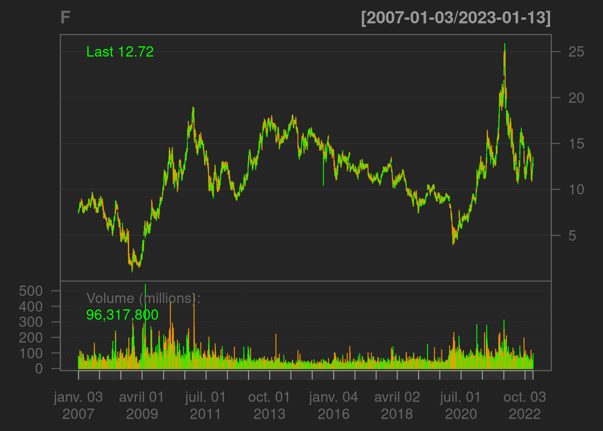

> library(RCurl)
> library(data.table)
> library(fasttime)
> library(fImport)
> library(timeSeries)
> library(empfin)
> library(stringr)
> library(lubridate)
> library(quantmod)
> data(LiborRates)This first chapter describes the data sources and the processing that has been performed to create the data sets found in the package. In the following chapters, we will use data from three asset classes: commodities, equities and fixed income.
The CME group (www.cmegroup.com) provides a large quantity of data on the products listed on its exchanges. Commodity prices are particularly interesting in empirical finance because they exhibit high volatility, seasonality, and many other specific features.
The following function downloads settlement data on commodity options and futures traded on the NYMEX.
getNymexData <- function(type) {
url <- "ftp://ftp.cmegroup.com/pub/settle/"
filename <- paste("nymex_", type, ".csv",
sep = "")
fn <- paste(url, filename, sep = "")
curl <- getCurlHandle(ftp.use.epsv = FALSE)
x <- getURL(fn, curl = curl)
# csv <- strsplit(x, '\n')[[1]]
con <- textConnection(csv)
tmp <- data.frame(read.csv(con, header = TRUE))
close(con)
if (type == "future") {
goodColumns <- c("PRODUCT.SYMBOL", "CONTRACT.MONTH",
"CONTRACT.YEAR", "CONTRACT", "PRODUCT.DESCRIPTION",
"SETTLE", "EST..VOL", "TRADEDATE")
goodNames <- c("Symbol", "Month", "Year",
"Contract", "Description", "Settle",
"Volume", "TradeDate")
}
if (type == "option") {
goodColumns <- c("PRODUCT.SYMBOL", "CONTRACT.MONTH",
"CONTRACT.YEAR", "PUT.CALL", "STRIKE",
"SETTLE", "EST..VOL", "TRADEDATE")
goodNames <- c("Symbol", "Month", "Year",
"CP", "Strike", "Settle", "Volume",
"TradeDate")
}
tmp <- tmp[, goodColumns]
colnames(tmp) <- goodNames
tmp
}As an illustration, the following script downloads the NYMEX futures data and extracts the Crude Oil (WTI) futures settlement prices. Running the code on January 9, 2019, yields the following result:
nymex.futures <- getNymexData('future')
tmp <- nymex.futures[nymex.futures$Symbol == 'CL',]
head(tmp[,c('Month', 'Year', 'Contract', 'Settle')])
Month Year Contract Settle
4645 2 2019 CLG19 49.78
4646 3 2019 CLH19 50.11
4647 4 2019 CLJ19 50.49
4648 5 2019 CLK19 50.93
4649 6 2019 CLM19 51.36
4650 7 2019 CLN19 51.74For the record, the same function executed on October 11, 2012, yielded the following data set:
head(tmp[,c('Month', 'Year', 'Contract', 'Settle')])
Month Year Contract Settle
1998 11 2012 CLX12 91.25
1999 12 2012 CLZ12 91.64
2000 1 2013 CLF13 92.11
2001 2 2013 CLG13 92.58
2002 3 2013 CLH13 93.00
2003 4 2013 CLJ13 93.30The U.S. Energy Information Administration (www.eia.gov) publishes
historical data on spot and future prices. The data set in package
The package
The time series can be downloaded from a web browser, but can also be downloaded programmatically. The site provides directions on how to construct the URL corresponding to each particular data set.
In the example below, the URL is specific to the H15 table, with all available deposit and swap rates included.
get.frb.url <- function(dtStart, dtEnd) {
# Federal Reserve Board URL Construct
# this URL at
# 'http://www.federalreserve.gov/datadownload
url.1 <- paste("https://www.federalreserve.gov/datadownload/Output.aspx?",
"rel=H15&series=0b30e7214e1df1ba738a199d707702f1",
"&lastobs=", sep = "")
url.2 <- "&filetype=csv&label=include&layout=seriescolumn"
url.2 <- "&filetype=csv&label=include&layout=seriescolumn"
url <- paste(url.1, "&from=", as.character(dtStart,
format = "%m/%d/%Y"), "&to=", as.character(dtEnd,
format = "%m/%d/%Y"), url.2, sep = "")
url
}The data is downloaded from the FRB web site and converted into a object, with more explicit names. The resulting time series has daily observations and 11 columns, with deposit rates of maturities 1, 3, and 6 months, and swap rates with maturities ranging from 1 to 30 years.
getLiborRates <- function(dtStart, dtEnd) {
columns.dic = hash(keys = c("RIFLDIY01_N.B",
"RIFLDIY02_N.B", "RIFLDIY03_N.B", "RIFLDIY04_N.B",
"RIFLDIY05_N.B", "RIFLDIY07_N.B", "RIFLDIY10_N.B",
"RIFLDIY30_N.B", "RILSPDEPM01_N.B", "RILSPDEPM03_N.B",
"RILSPDEPM06_N.B"), values = c("Swap1Y",
"Swap2Y", "Swap3Y", "Swap4Y", "Swap5Y",
"Swap7Y", "Swap10Y", "Swap30Y", "Libor1M",
"Libor3M", "Libor6M"))
# non-available data is marked 'ND' or
# 'NC' in the data set
good.row <- function(x) length(grep("NC|ND",
x)) == 0
url <- get.frb.url(dtStart, dtEnd)
curl <- getCurlHandle(ftp.use.epsv = FALSE)
x <- getURL(url, curl = curl)
csv <- strsplit(x, "\n")[[1]]
# skip 5 header rows at start of file
con <- textConnection(csv[6:length(csv)])
# colClasses='character' needed to avoid
# conversion to factors
csv <- read.csv(con, colClasses = "character",
header = TRUE)
close(con)
ncol <- dim(csv)[2]
indx <- apply(csv, 1, good.row)
dt <- as.Date(csv$Time.Period[indx])
vx <- data.frame(csv[indx, 2:ncol])
for (i in seq(ncol - 1)) vx[, i] = as.numeric(vx[,
i])
colNames = unlist(sapply(names(vx), function(x) columns.dic[[x]]),
use.names = FALSE)
timeSeries(vx, dt, format = "%Y-%m-%d", zone = "GMT",
FinCenter = "GMT", units = colNames)
}Executing this function on January 9, 2019 yields the following result.
> dtStart <- myDate('01Jan2010')
> dtEnd <- myDate('01Jan2011')
> ts = getLiborRates(dtStart, dtEnd)
> head(ts[,c('Swap1Y', 'Swap10Y', 'Swap30Y')])
GMT
Swap1Y Swap10Y Swap30Y
2010-01-04 0.65 3.93 4.51
2010-01-05 0.61 3.87 4.46
2010-01-06 0.60 3.92 4.52
2010-01-07 0.57 3.92 4.53
2010-01-08 0.55 3.94 4.58
2010-01-11 0.53 3.91 4.56The dataset in package has been constructed with this function, and provides daily rates from July 2000 to October 2016.
As of this writing, current and historical Libor rates are available from the Wall Street Journal Market Data Center (www.wsj.com). Swap rates are available, for example, from Skandinaviska Enskilda Banken (www.sebgroup.com).
The European Central Bank publishes fitted curves of euro area AAA sovereign yield. The data can be downloaded as a .csv file from this institution’s statistical data warehouse (sdw.ecb.europa.eu). The following script read, parse and display the par AAA euro government yield curve for a set of dates.
# read, keep only par yield data
ecb.file <- fread("./data/ecb-data.csv", select = c("DATA_TYPE_FM",
"TIME_PERIOD", "OBS_VALUE"))[substr(DATA_TYPE_FM,
1, 2) == "PY"]
ecb.file$TIME_PERIOD <- as.Date(ecb.file$TIME_PERIOD)
# convert to rectangular table, one column
# per maturity
tmp <- dcast(ecb.file, TIME_PERIOD ~ DATA_TYPE_FM,
value.var = "OBS_VALUE")
ecb.series <- tmp[, -1]
# row names are characters
row.names(ecb.series) <- tmp$TIME_PERIOD
# decode maturity from column names
tokens <- str_match(names(ecb.series), "^PY_(([0-9]+)Y)?(([0-9]+)M)?")
# maturity expressed in months
mat <- apply(tokens, 1, function(x) {
tmp <- as.numeric(x[c(3, 5)])
tmp[is.na(tmp)] <- 0
12 * tmp[1] + tmp[2]
})
# rearrange columns by maturity
sort.mat <- sort(mat, index.return = TRUE)
setcolorder(ecb.series, neworder = sort.mat$ix)Plotting a few curves let us measure the sharp increase in interest rate during the year 2022.
nbObs <- dim(ecb.series)[1]
indx <- seq(1, nbObs, 100)
YC <- ecb.series[indx, ]
dtObs <- as.Date(row.names(ecb.series)[indx])
nbSample <- length(indx)
dtMat = dtObs[1] + months(sort.mat$x)
plot(dtMat, YC[1, ], type = "l", ylim = c(-1,
4), xlim = c(dtObs[1], dtObs[nbSample] + months(last(sort.mat$x))),
bty = "n", col = 1, lwd = 2, ylab = "Euro AAA Govt Yield",
xlab = "Maturity date")
text.legend = format(dtObs[1], "%D")
abline(h = 0, lty = 2, lwd = 1)
for (i in seq(2, nbSample)) {
dtMat = dtObs[i] + months(sort.mat$x)
lines(dtMat, YC[i, ], type = "l", col = i,
lwd = 2)
text.legend <- append(text.legend, list(format(dtObs[i],
"%D")))
}
legend(x = "topleft", legend = text.legend, lty = 1,
col = seq(nbSample), cex = 1, box.lty = 0)Time series of stock prices are readily available from free on-line services. The provides a simple function to fetch Open/High/Low/Close/Volume series from Yahoo Finance as an xts time series:
getSymbols("F", src = "yahoo")## [1] "F"and a good-looking bar chart is obtained by invoking
barChart(F)
For illustrative purpose, the package provides one time series of daily prices for three stocks: IBM, Coca-Cola (KO) and Trans-Ocean (RIG), and one Exchange Traded Fund: the Nasdaq 100 Trust (QQQQ).